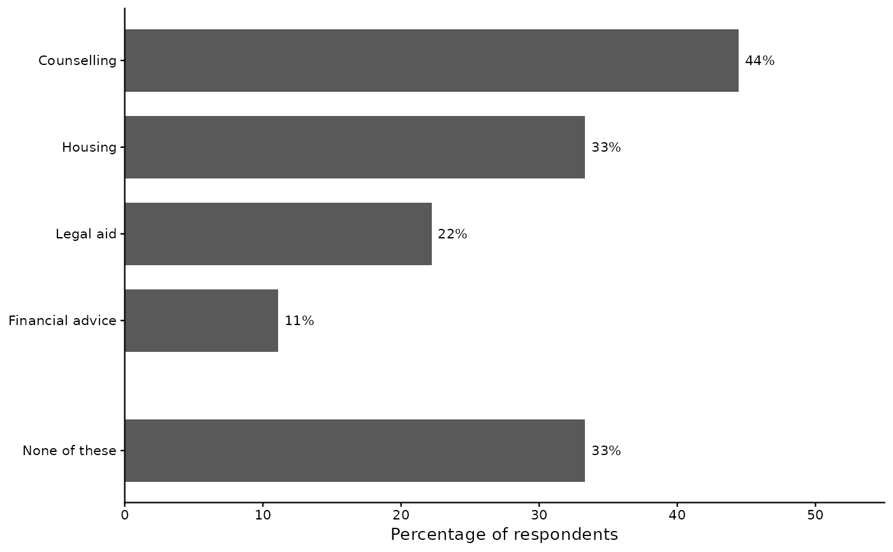

Tabulates a multiple-response question – "Which of these services have
you used? Tick all that apply." – stored, as survey software stores it,
as one yes/no item per option. For each option it counts the people who
chose it and gives the percentage of everyone who answered the
question, so the percentages can sum to more than 100. SPSS calls this a
multiple-response set (MULT RESPONSE, or a CTABLES $ set).
Usage
jmulti(
data,
...,
none = NULL,
ticked = 1,
rank = TRUE,
subset = NULL,
variable.id = NULL,
case.processing.detail = NULL,
print = NULL
)Arguments
- data
A data frame.
- ...
The set's yes/no items, unquoted: their names, or a range of columns in the data frame's order (
Q1_SQ001:Q1_SQ006, SPSS's TO), or both. Ac()of names, bare or quoted, is read as the names.- none
The survey's own "None of these" item, if it had one, unquoted or in quotes. NULL (the default) for none.
- ticked
The value an item holds when its option was chosen: 1 (the default), or another number or a text value in quotes.
- rank
Logical. TRUE (the default) lists the options by how many chose them, most first; FALSE keeps the data frame's order.
- subset
An optional unquoted logical expression (e.g.
Group == 1) to subset cases for this call only. Applied after jcomplete and jsubset. Does not affect other function calls.- variable.id
Character or NULL. How the options are named in the console:
"names"(the items' names),"labels"(the text each item's label adds to what the set's labels share),"both"("name: label"), or"legend"or"legend.bottom"(names, with the labels listed after the table). NULL (the default) defers tojoutput()'svariable.idsetting.- case.processing.detail
Accepted for symmetry with the other analysis functions; the Case Processing table here shows the filters only, and the Analysis N line says how many answered no item.
Logical or NULL.
FALSEprints nothing – no table, no title, no note – and returns the result as every call does; errors and warnings still show.TRUEprints even underjoutput("silent").NULL(the default) prints unless the level is silent.
Value
Invisibly, a list of class jst_multi: table (the
rows as printed), rows_raw (each row's item, label, option
text, kind, count and unrounded percentage), items (the items,
the none = item last), none, ticked, rank,
title (the text the labels share, or NA), n (everyone
who answered), n_excluded (those who answered no item),
n_none (those who answered and chose none), sample_info
and data_name.
Details
Who is counted. N is everyone who answered: a person with an
answer on at least one item. A blank among a person's answers counts as
not chosen – survey software often writes an unticked box as blank –
and a person blank or declared missing on every item (not asked, or
skipped the question) is left out of N. A "None of these" row counts
those who answered and chose none of the options; it prints only when
anyone did. When the survey had its own "None of these" box, name it
with none =: it is counted with the others and its row comes
last. When no item holds a "No" at all – a file that writes every
unticked box as blank – a person who chose nothing cannot be told from
one who was not asked, and a note says so.
The value counted as chosen is 1, which LimeSurvey's SPSS
files, Qualtrics and REDCap all write for a ticked box; ticked =
names another (ticked = "Y" for LimeSurvey's CSV files). Only
the set's yes/no items belong in the call: an item holding more than
two values stops it, as does a text answer such as an "Other" box – a
text item among numbers, or, under ticked = "Y", an item holding
text that no other item of the set holds.
The order. The options are ranked by how many chose them, most
first; rank = FALSE keeps the order of the data frame. Either
way the "None of these" rows come last.
The title of the set is the text its items' labels share –
"Services used" for items labelled "Services used: Counselling" and
"Services used: Housing" – and each option is named by the rest of its
label. Items whose labels share no text are named by their labels, and
the set is titled "Options Chosen". Keep the result with <- to
make a publication table of it with jtable.
Examples
# "Which services have you used?" -- one item per service, 1 = chosen,
# 2 = not chosen; the seventh person was not asked
svc <- data.frame(
Counselling = c(1, 2, 1, 2, 2, 1, NA, 2, 1, 2),
Housing = c(2, 1, 1, 2, 2, 1, NA, 2, 2, 2),
LegalAid = c(2, 2, 1, 1, 2, 2, NA, 2, 2, 2),
Financial = c(2, 2, 2, 2, 2, 1, NA, 2, 2, 2))
attr(svc$Counselling, "label") <- "Services used: Counselling"
attr(svc$Housing, "label") <- "Services used: Housing"
attr(svc$LegalAid, "label") <- "Services used: Legal aid"
attr(svc$Financial, "label") <- "Services used: Financial advice"
jmulti(svc, Counselling:Financial)
#> Multiple Response
#>
#> Analysis N: 9 (1 answered no item)
#>
#> Services used
#> Freq Percent
#> ------------- ---- -------
#> Counselling 4 44.44
#> Housing 3 33.33
#> LegalAid 2 22.22
#> Financial 1 11.11
#> None of these 3 33.33
#>
# The options in the data frame's order, named by their labels
jmulti(svc, Counselling:Financial, rank = FALSE, variable.id = "labels")
#> Multiple Response
#>
#> Analysis N: 9 (1 answered no item)
#>
#> Services used
#> Freq Percent
#> ---------------- ---- -------
#> Counselling 4 44.44
#> Housing 3 33.33
#> Legal aid 2 22.22
#> Financial advice 1 11.11
#> None of these 3 33.33
#>
# Keep the result to make a publication table of it, or to draw its
# ranked bar chart
m <- jmulti(svc, Counselling:Financial, print = FALSE)
t1 <- jtable(m)
#> Table 1. Services used (N = 9)
#> 1 set of 4 options, on a portrait page.
#> The table was made in R; no Word file was asked for.
#>
jplot(m)
